Batch Session — Muddapura, 17 Mar 2026
Large Batch Orientation — 23 Feb 2026
Practical Session — Training Centre
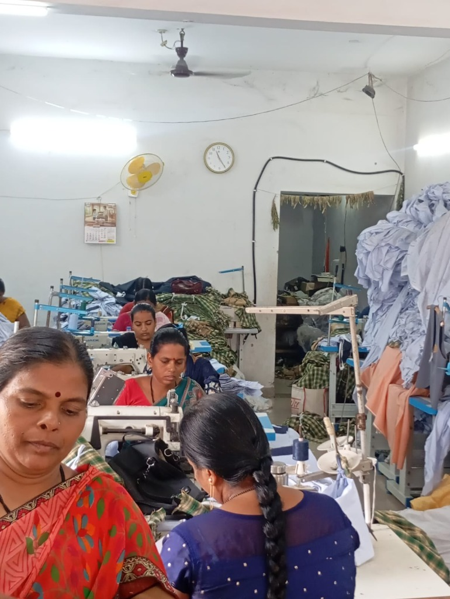
Sewing Work in Progress — Muddapura
Active Sewing Session — 27 May 2026
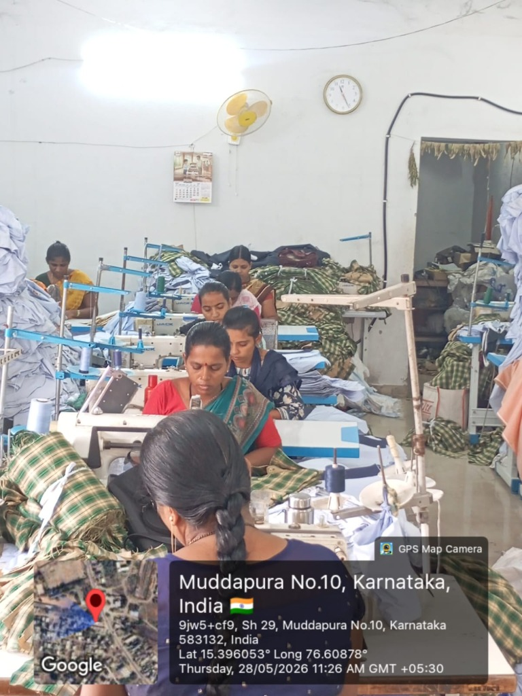
Garment Stitching — 28 May 2026
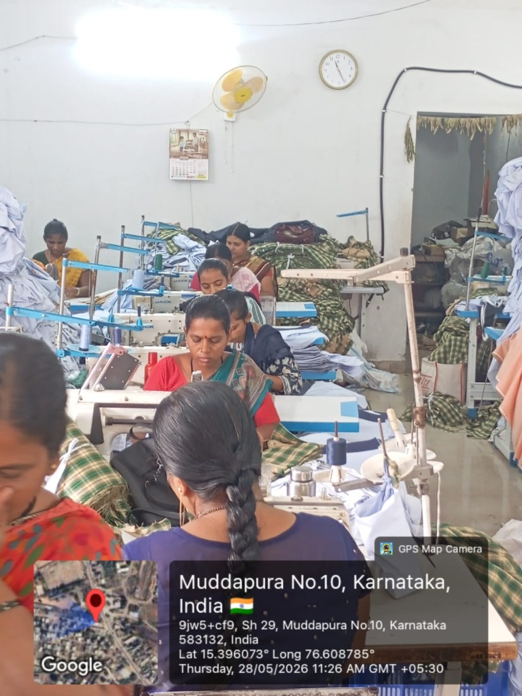
Tailors at Work — 28 May 2026
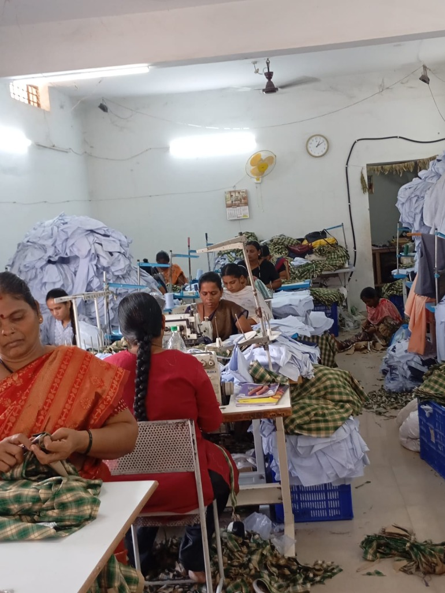
Detailed Sewing Work — Muddapura
Production Session — 01 Jun 2026
Women Tailors — 30 May 2026
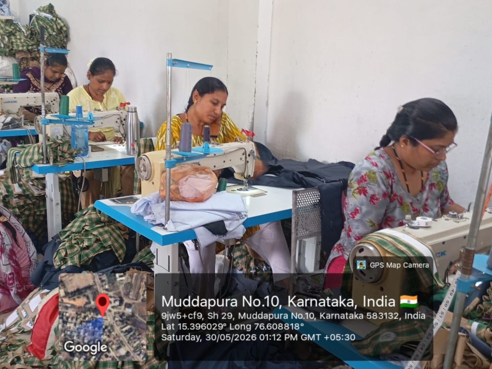
Machine Work — 30 May 2026
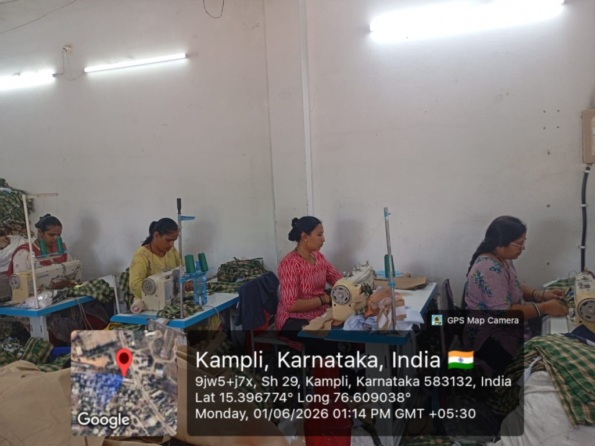
Kampli Training Centre — 01 Jun 2026
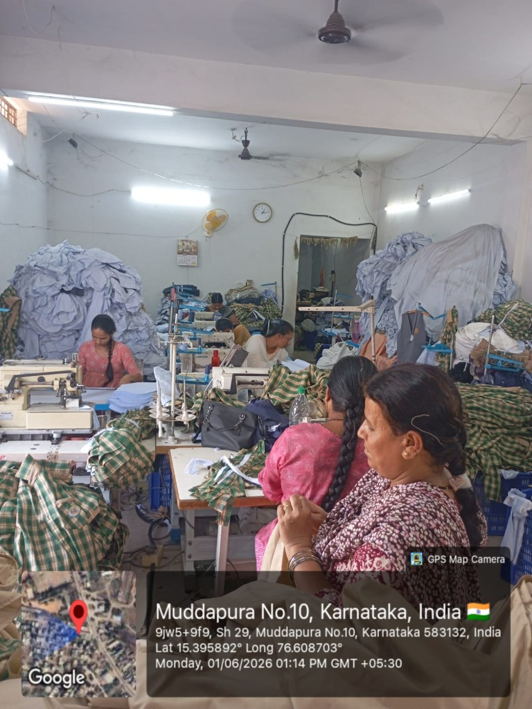
Garment Production — 01 Jun 2026
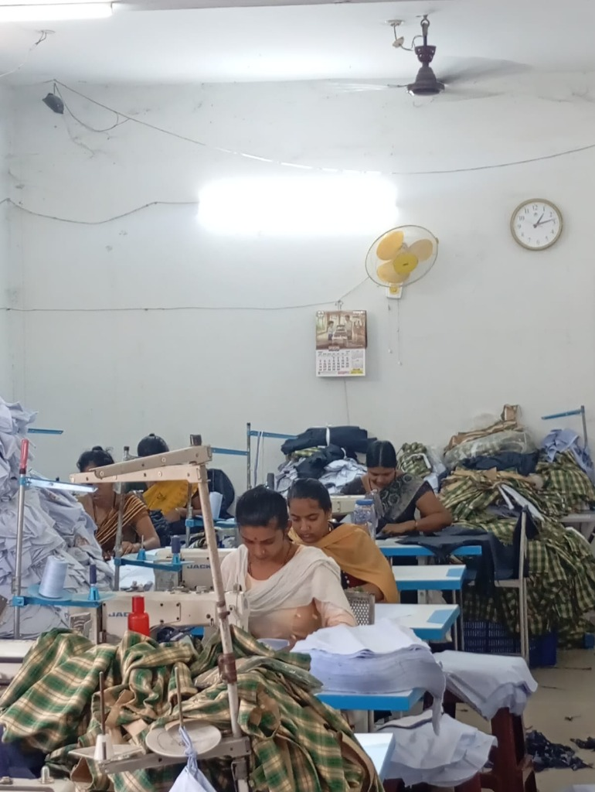
Focus Session — Muddapura Centre
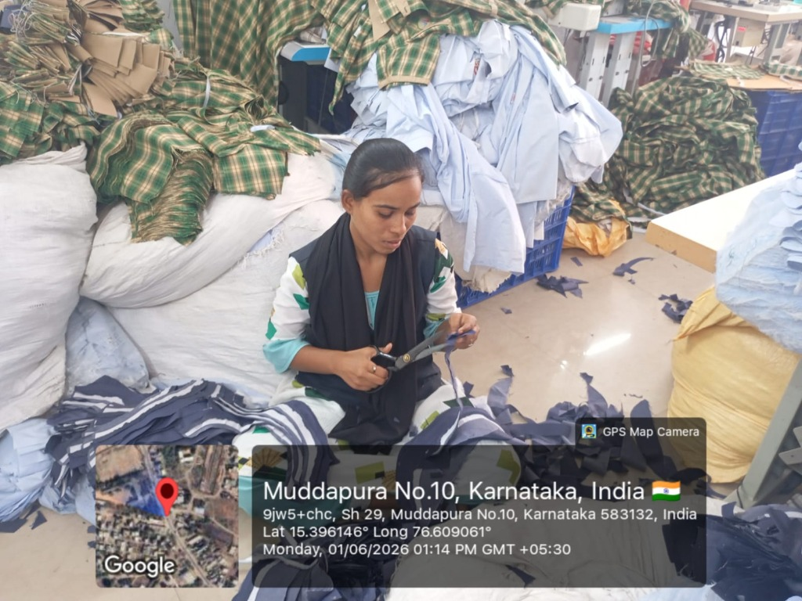
Fabric Cutting — 01 Jun 2026

Certificate Distribution — Kampli, 29 May 2026

Proud Graduates — Kampli, 29 May 2026
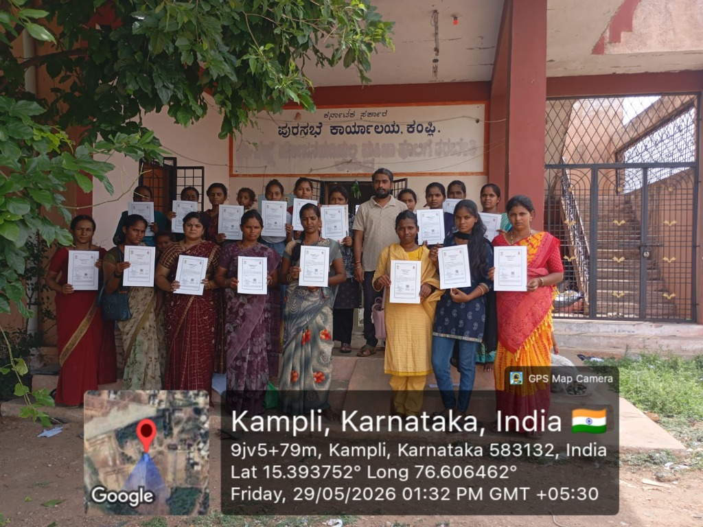
Kampli Batch Graduates — 29 May 2026
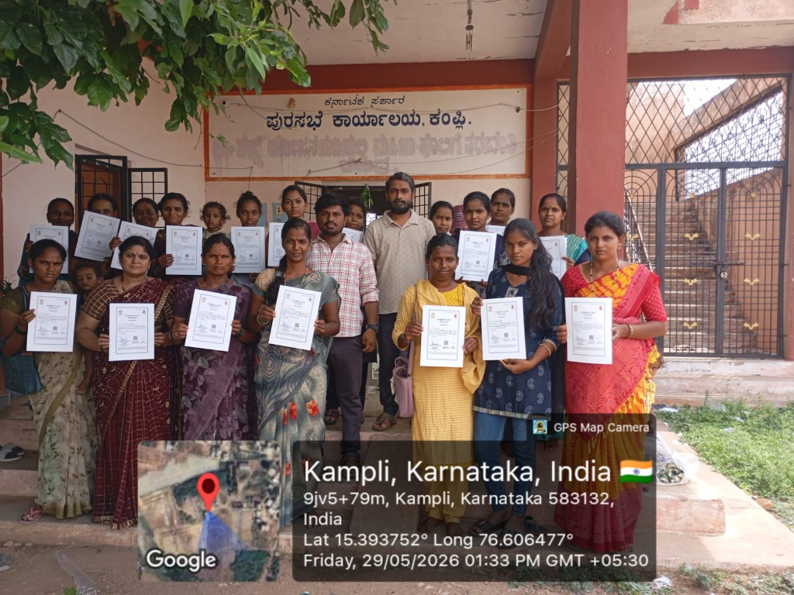
Certified Trainees — Kampli, 29 May 2026